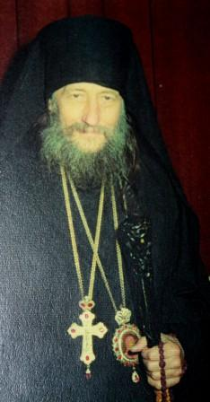
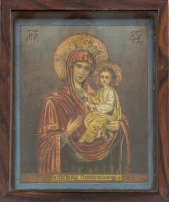
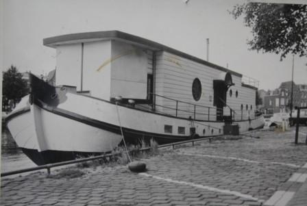
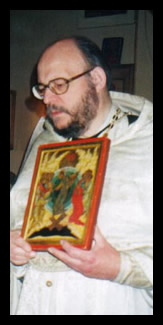
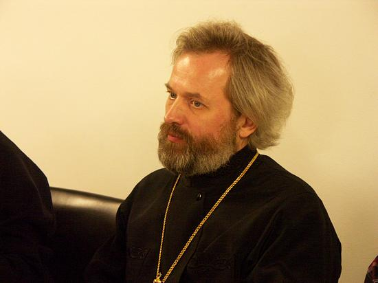

")

")

Приход в Роттердаме был организован архимандритом (с 1966 года епископ) Дионисием (Лукиным), сыном царского морского офицера. Отец Дионисий прошел долгий путь пастырства, к которому сознательно стремился еще в годы своей юности, что он сам отметил в своём слове при наречении во епископа Роттердамского в марте 1966 года. "Я ... получил поверхностное религиозное воспитание. Мой приход к Церкви был следствием внутреннего переворота и вполне сознательного обращения к Богу, которое совершилось в дни моей юности, и с тех пор я решил посвятить свою жизнь служению Богу, стремясь при этом к монашеству. В этот период своей жизни я много переписывался с иноками Афона и получил в благословение от архимандрита Мисаила, настоятеля Пантелеимоновского монастыря, небольшую икону Божией Матери "Скоропослушницы", празднование которой приходилось на следующий день после дня моего Ангела в миру. В этом я усмотрел еще тогда особое указание свыше на монашество и с тех пор возымел к этой иконе особое почитание, неоднократно получая чрез нее помощь в решительные минуты жизни. Поскольку в тогдашних заграничных условиях для меня было почти невозможно осуществить желание уйти в монастырь, то я, по окончании Богословского института в Париже и принятии монашества и священства, проходил пастырское служение в различных приходах Франции и Италии, пока волею Божией в 1936 году не попал в Голландию. Там мне сразу пришлось заняться строительством храма св. равноапостольной Марии Магдалины в Гааге, торжественно освященного в 1937 году. Весть об этом событии облетела в то время всю заграничную русскую печать. Произволением Божиим она попала и в девственные леса Южной Индии, в келию подвизавшегося там русского отшельника, в гостях у которого в то время находился один голландский ученый: услышав от местных жителей о русском отшельнике, он захотел его посетить.
И вот, узнав об освящении нового православного храма в Голландии, о. иеросхимонах Константин - так звали отшельника - пожелал пожертвовать в новый храм только что им написанную икону Божией Матери "Скоропослушницы", которую он и переслал нам с тем самым своим неожиданным голландским гостем, предварительно сделав на иконе надпись: "В благословение православной Голландии". И, действительно, вскоре по получении нами этой иконы начались первые обращения голландцев в Православие. Впоследствии, особенно в тяжелые годы войны, мы много раз получали помощь, явленную нам чрез посредство иконы Божией Матери "Скоропослушницы". Поэтому в знак нашей благодарности и в свидетельство о Ее заступничестве мы и решили посвятить первый созданный после войны храм именно этой чудотворной иконе Божией Матери…»
Одно из чудесных проявлений помощи и заступничества Пресвятой Богородицы, о которых упоминает о. Дионисий, случилось с ним самим. Во время Второй мировой войны, когда Нидерланды были оккупированы фашистской Германией, о. Дионисий прятал в своем храме людей от облав. По доносу он был арестован гестапо и, находясь в застенках этой зловещей организации, готовился к самому худшему. Молясь перед образом иконы Божией Матери "Скоропослушница" – той самой, которую передал русский отшельник - дал обет: если Господь сподобит его остаться в живых и даст возможность когда-нибудь организовать приход или устроить церковь, то он посвятит его иконе Божией Матери "Скоропослушница". И в скором времени отца Дионисия отпустили.
После войны в Голландии оказалось довольно много советских девушек и молодых женщин, угнанных фашистами из Советского Союза на работу в Германию. Эти женщины - их называли "дочери Сталина" или «красные девушки» - стали ходить в церковь в Гааге. Потому что храм оказался единственным местом, которое напоминало им об утерянной Родине. Но в Гааге еще были в силе представители первой волны эмиграции. И они не приняли новых прихожан! Ведь те воспитывались уже в годы безбожных пятилеток и мало что знали о церковной и богослужебной жизни. Тогда отец Дионисий организовал для «отвергнутых Гаагой» приход в Роттердаме, где для богослужений первоначально снималось помещение в балетной школе. Каждое воскресенье приходилось готовить зал к совершению Литургии: расставлять аналои, вешать иконы, а после службы и чаепития все убирать до следующего раза.
В 1957-м году роттердамский приход получил возможность совершать богослужения на жилом кораблике, который назывался "Северное сияние". Там был устроен временный храм в честь святителя Николая. В 1958-м году в Утрехте проходила богословская конференция, в работе которой принимал участие митрополит Крутицкий и Коломенский Николай (Ярушевич), в то время являвшийся председателем Отдела Внешних Церковных Сношений Московского Патриархата. Отец Дионисий встретился с владыкой Николаем и попросил оказать финансовую помощь для приобретения здания в Роттердаме с целью устроения там домовой церкви и жилья для священнослужителя.Помощь была оказана, и в 1958-м году общиной было куплено в собственность Московского Патриархата здание на Persijnstraat. Членам прихода потребовалось приложить много усилий, чтобы вычистить старый запущенный дом и благоукрасить его, приготовив к освящению.
И уже 26 января 1959 года домовая церковь в Роттердаме была освящена в честь иконы Божией Матери "Скоропослушница". Освящение совершили митрополит Парижский Николай и епископ Лондонский Антоний (Блюм) - известный проповедник - в сослужении духовенства и в присутствии многочисленных верующих и гостей. Приход в Роттердаме был очень активным и довольно многочисленным. Женщины, которые оказались вдалеке от Родины, приходили в храм сами и приводили своих детей и мужей. В те времена это было не так просто, если вспомнить что в разгаре была "холодная война" и все, что было связано с "русским" ассоциировалось с Советским Союзом, "красными".
Дети прислуживали за богослужениями, учили русский язык. Организовывались детские летние православные лагеря, где ребята отдыхали, трудились и молились. Огромную помощь отцу Дионисию оказывали активные прихожане, среди которых особенно известна одна из основательниц этого прихода и многолетний регент церковного хора Валентина Петровна Тимофеева. Она скончалась 28 сентября 2004 года.
В 1966 году во исполнение решения Священного Синода Русской Православной Церкви архимандрит Дионисий в Москве был хиротонисан во епископа Роттердамского. Хиротонию в Троице-Сергиевой Лавре совершил приснопамятный патриарх Алексий I (Симанский) с сонмом епископов. После епископской хиротонии владыка Дионисий трудился в роттердамском приходе еще десять лет до своей кончины, которая наступила 8 марта 1976 года. Похоронен он на старом кладбище в Гааге рядом с могилой своего отца.

После смерти владыки Дионисия жизнью прихода в течении двух лет руководил священник Евстратий Бергман -
благочестивый голландец, который под влиянием епископа Дионисия принял
Православие и был рукоположен сначала во диакона, а затем и во
священника. Отец Евстратий скончался 9 марта 2005 года.
В 1990 году решением Святейшего Патриарха и Священного Синода Русской Православной Церкви настоятелем храма в Роттердаме был назначен священник Григорий Красноцветов.
 Протоиерей Григорий Красноцветов
- Григорий Павлович Красноцветов - родился 18 января 1961 года в городе
Ярославле в семье потомственного священника. После окончания средней
школы и службы в армии поступил в 1981 году в Ленинградскую Духовную
Семинарию, окончив четырехлетний курс обучения за три года.
В
1984 году поступил в Духовную Академию, которую закончил в 1988 году. В
том же году был удостоен степени кандидата богословия за кандидатское
сочинение по кафедре Истории Русской Церкви "Обсуждение вопроса о высшем
церковном управлении Русской Православной Церкви в начале ХХ века. По
материалам Предсоборного Присутствия 1905-1906 гг."
В 1985 году
женился на Инне Ивановне Жудиновой, обучавшейся на Регентском отделении
при Ленинградских духовных школах. В 1985 году в семье родился сын
Павел, в 1987 году - сын Михаил.
21 июля 1988 года в празднование
Казанской иконы Божией Матери митрополитом Ленинградским и Новгородским
Алексием (с 1990 года - Патриарх Московский и всея Руси) рукоположен в
сан диакона. Служил в диаконском сане в храме Смоленской иконы Божией
Матери на Смоленском кладбище города Ленинграда, где находится часовня
почитаемой православным народом блаженной Ксении Петербургской.
7
апреля 1989 года в праздник Благовещения Пресвятой Богородицы в
Князь-Владимирском соборе города Ленинграда митрополитом Алексием был
рукоположен в сан священника и оставлен для прохождения священнического
служения в соборе. Одновременно отец Григорий являлся преподавателем
Литургики и Церковного устава в Ленинградской Семинарии и членом
Воспитательского совета. В тоже время выступал с лекциями и беседами в
институтах, школах, библиотеках, на предприятиях.
Во
время и после окончания обучения в Семинарии и Академии участвовал в
организации, проведении и работе многих международных богословских
форумов, конференций и встреч. Среди них: "Религиозные деятели за
спасение священного дара жизни от ядерной катастрофы" (Москва, 1982);
ХII и XIII Генеральные Ассамблеи Всемирного братства православной
молодежи Синдесмос (Эффенхам, Англия, 1986; Бостон, США, 1989);
Международные церковно-исторические конференции, посвященные 1000-летию
Крещения Руси (Киев, 1986; Белосток и Вроцлав, Польша, 1987), "За
безъядерный мир, за выживание человечества" (Москва, 1987), заседания
Исполнительного и Центрального Комитетов ВСЦ (Ганновер, Германия, 1988),
Всемирная конвокация "Мир, справедливость и целостность творения"
(Южная Корея, Сеул, 1990).
В 1990 году решением Святейшего
Патриарха Пимена и Священного Синода Русской Православной Церкви
назначен настоятелем храма иконы Божией Матери "Скоропослушница" в
городе Роттердаме (Королевство Нидерландов).
В 1992 году указом
управляющего Гаагской и Нидерландской епархией архиепископа
Брюссельского и Бельгийского Симона назначен секретарем епархии.
В
2005 году Министерством юстиции Королевства Нидерландов утвержден в
должности тюремного священника, окормляющего православных разных
национальностей, содержащихся в голландских тюрьмах.
Принимал участие в работе I Всемирного конгресса соотечественников (2001); в конференции, посвященной 50-летию со дня смерти и перенесению праха писателя Ивана Шмелева в Москву (2000). В 2003 году протоиерей Григорий Красноцветов участвовал в презентации первого тома (свыше 700 страниц) книги «Роман в письмах. Переписка И.С. Шмелева и О.А. Бредиус-Субботиной». Презентация проходила в Москве в рамках конференции «Россика в контексте мировой культуры: история, архивы, современность», на которой отец Григорий выступил с докладом. Эта книга издана на основании уникальных архивных материалов, спасенных и сохраненных отцом Григорием и переданных им в 1999 году в Российский Государственный Архив Литературы и Искусства (к настоящему времени издано 3 тома).
Делегат от духовенства Гаагской и Нидерландской епархии Русской Православной Церкви на Поместном соборе 2009 года по избранию Патриарха Московского и всея Руси.
С 1993 года в течение десяти лет отец Григорий
занимался разработкой проекта и осуществлением строительства в
Роттердаме первого в истории Нидерландов настоящего русского
православного храма. Проект успешно завершился 20 июня 2004 года
освящением храма в честь святого благоверного великого князя Александра
Невского, которое возглавил митрополит Смоленский и Калининградский
Кирилл.
Награжден правом ношения наперсного креста с украшениями,
орденом преподобного Сергия Радонежского 3-й степени, Патриаршими
благословенными грамотами, медалью преподобного Сергия Радонежского. В
2012 году к празднику Святой Пасхи Святейшим Патриархом Московским и
всея Руси Кириллом награжден правом ношения митры.